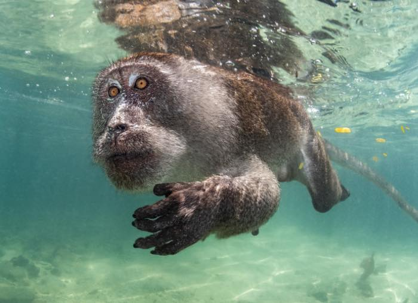

OceanAid stands at the forefront of marine wildlife protection. We actively work to conserve endangered species and monitor marine populations to prevent further decline. Equally important is our community engagement; we build strong partnerships with local groups, volunteers, and experts, creating a united front to champion sustainable practices and marine stewardship.
We believe that a healthy ocean starts with preserving its natural beauty. Through habitat restoration projects-from safeguarding delicate coral reefs to preserving mangroves-we work tirelessly to maintain nature's underwater wonders. Our cleanup initiatives focus on reducing ocean trash and pollution, ensuring that our waters remain a safe haven for marine life.
OceanAid stands at the forefront of marine wildlife protection. We actively work to conserve endangered species and monitor marine populations to prevent further decline. Equally important is our community engagement; we build strong partnerships with local groups, volunteers, and experts, creating a united front to champion sustainable practices and marine stewardship.
Knowledge is the tide that turns challenges into solutions. We invest in cutting-edge research and community education to spread awareness about ocean issues. Our innovative programs leverage technology and creative strategies to find sustainable solutions, empowering individuals and communities to make impactful changes in ocean conservation.